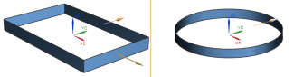
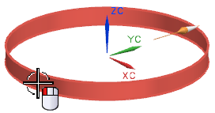
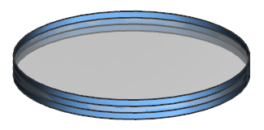

重新定义框架链接体的父级
-
在部件导航器中，双击链接体。
-
在 WAVE 几何体链接器对话框的部件组中，点击选择部件 。
-
在选择部件对话框中，点击打开
 。
。 -
在部件名对话框中，选择 wav3_reparent_round_frame 然后点击确定。
-
在选择部件对话框中，确保选择的是 wav3_reparent_round_frame 然后点击确定。
拆分屏幕视图将在左侧显示矩形框架，在右侧显示圆形框架。

-
选择圆形框架。

在 WAVE 几何体链接器对话框中，现在已激活映射组，替换助理可以用来将一个对象上的面用另一个对象上的指定面来代替。
父级信息组现在显示新的父部件为 wav3_reparent_round_frame。
-
点击确定。
模型将发生更新，并且链接体现在显示为圆形框架。
